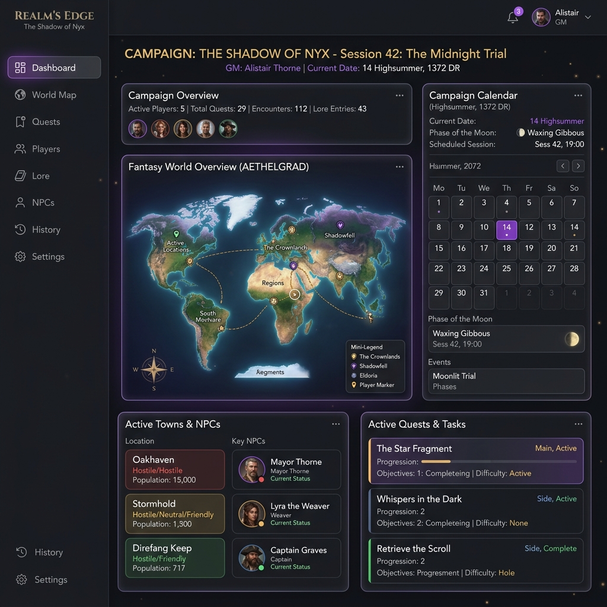
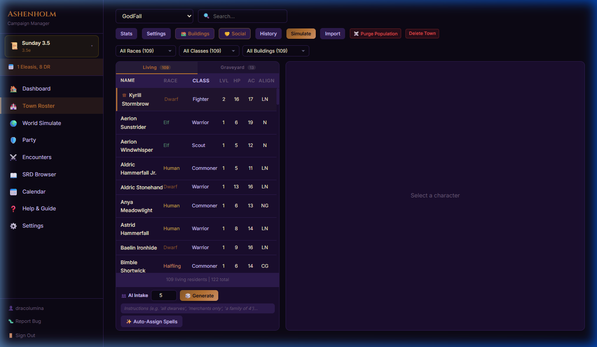
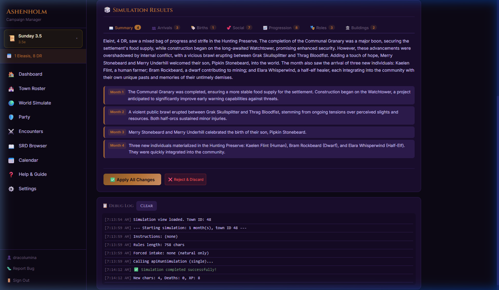

Run downtime in 5 minutes. Make your world react between sessions.
A living world engine for D&D 3.5 campaigns. Skip 2 weeks of in-game time and get a reviewed change-set: weather shifts, faction moves, NPC activity, rumors, and adventure hooks — all under your control. No AI art. No AI storytelling. Just systems that save you prep.
No more scrambling for NPC names mid-session. No more forgetting who the blacksmith married. Eon Weaver advances your world between sessions and gives you a reviewed change-set — not random lore. You approve every change.

Generate entire town populations with unique names, races, classes, stats, and backstories. The AI cross-references existing rosters to guarantee no duplicates.
Simulate weeks, months, or years of in-game time. Watch relationships form, buildings rise, factions emerge, and threats materialize — all while you're away from the table.
NPCs forge romantic relationships, marry, and have children over time. Track lineages and see how families shape town politics across generations.
An integrated D&D 3.5 System Reference Document browser with full spells, feats, skills, classes, and items — all searchable and cross-referenced.
Smart AI routing sends simple tasks (stat generation) to fast models and complex narrative tasks (story events, dialogue) to powerful creative models — maximizing speed and quality.
Define your own in-game calendar with custom month names, day counts, eras, and epoch names. The simulation respects and advances your timeline perfectly.
Keep continuous records of your campaign. Track overall world progression, historical events, and lore developments as the simulation generates them.
Configure XP scaling, death thresholds, relationship speeds, conflict frequency, and demographic targets. These rules are injected directly into the AI's decision-making.
Manage constructed buildings, assigning NPCs to rooms and structures. Track construction status and watch your village grow into a kingdom.
Visualize town demographics with auto-updating distributions of races, classes, age groups, and roles. Keep a clear overview of your world's makeup.
Customize setting constants with over 28 variables: magic level, political layout, religious dominance, planar shifts and crafting limits to perfectly model your canon.
Automatically calculates slot adjustment, damage multipliers, and action-economy constraints for applying metamagics like Empower and Heighten to prepared spells.
The AI grades resident downtime achievements month to month on a multi-axis scale to award passive XP to NPCs, accounting for combat, leadership, and class specific actions.
While tailored for 3.5e, Eon Weaver includes support settings for 5e 2014 and 5e 2024 out of the box, with built-in mechanics frameworks for each edition.
Eon Weaver was built by a DM who needed to simulate an entire living settlement between sessions. Every feature exists because a real table needed it. Here's what the tool makes possible.
Whether your campaign is high fantasy, dark horror, or political intrigue — Eon Weaver adapts. Define your world's lore, calendar, and rules. The AI respects your canon and generates content that fits.
Generate a frontier camp, a bustling trade city, or a besieged fortress. Each town gets a full population of NPCs with unique names, stats, professions, and backstories — all interconnected and evolving.
Skip days, weeks, or months. Relationships form, factions shift, buildings rise, and threats emerge. Every change is presented for your approval — nothing happens without the DM's say.
Every NPC gets a full D&D stat block, profession, relationships, and backstory — all generated and simulated by Eon Weaver.
Every time skip generates a reviewed change-set. Here's an example of what a 5-month simulation produces — every entry is DM-approved before applying.

Led by builders and dwarven stoneworkers, a sturdy wooden palisade and earthen berm are erected around the settlement's perimeter.
InfrastructureThe town's weaponsmith and leatherworker established a centralized crafting district to equip the settlement's defenders.
EconomyFarmers secured fertile land outside the gates, protected by continuous guard rotations. Stable food production begins.
AgricultureFour couples established romantic bonds — the mayor and the cleric, the smiths, and more — laying foundations for the town's future generations.
SocialEvery simulation is under your complete control. Nothing changes without your approval.
Define your world's lore, house rules, and setting constants. The AI reads your canon on every generation — your world, your authority.
Time passage generates a tabbed results panel — arrivals, departures, deaths, social changes, and events. Review everything before moving forward.
Every simulation writes a persistent, dated history log for each town. Scroll back through months of events, arrivals, and milestones at any time.
28+ homebrew parameters — conflict frequency, death thresholds, birth rates, relationship speed, magic level, and more — all fed directly into the AI's behavior.
Eon Weaver combines deep mechanical automation, rich worldbuilding tools, and AI-powered generation — into one living tool built specifically for D&D 3.5. Here's the plan.
These features are live and in active use right now — the foundation everything else builds on.
A working AI-powered living world simulator for D&D 3.5 campaigns — with deep character mechanics and world-scale simulation already built.
Guaranteed with successful funding — these ship to backers.
Full 1:1 automated parity with D&D 3.5e character sheets — the definitive digital character engine.
Run actual game sessions from Eon Weaver. "Between sessions" becomes "at the table."
An AI that "knows" your entire world — every NPC, faction, and event — and generates content that fits seamlessly into your campaign.
Unlocked as funding milestones are reached — scaling the universe.
Expand the already-working multi-town simulation with deep economic and environmental systems.
Get Eon Weaver into the hands of players, VTTs, and the broader TTRPG ecosystem.
Transform the town directory into a living, interconnected codex.
Eon Weaver is built natively for D&D 3.5 Edition — a massively underserved edition with almost zero modern tooling. All character generation, stat blocks, CR calculations, and SRD data follow 3.5e rules. However, we've recently added Multi-Edition support hooks for 5e 2014 and 5e 2024 built right into the framework.
Eon Weaver uses a budgeted dual-tier AI routing system. Simple tasks (stat generation) go to fast, cheap models. Complex narrative tasks (events, simulation) go to smarter models. You bring your own API key from popular AI providers (many offer free tiers). Most operations cost fractions of a cent — a full month simulation typically costs under $0.10.
This is our #1 design priority. Every simulation generates a tabbed results panel — arrivals, departures, deaths, social changes, and events — that you review before proceeding. Your campaign's lore, house rules, and 28+ world parameters are injected into every AI call, keeping generation consistent with your canon. Everything is logged in a persistent town history you can scroll back through at any time. The AI is a tool you direct, not an author that replaces you.
No. Eon Weaver does not generate, use, or display AI art. The AI is used exclusively for systems.
Join hundreds of DMs who are already using AI to make their campaigns unforgettable.
🗡️ Back This Project